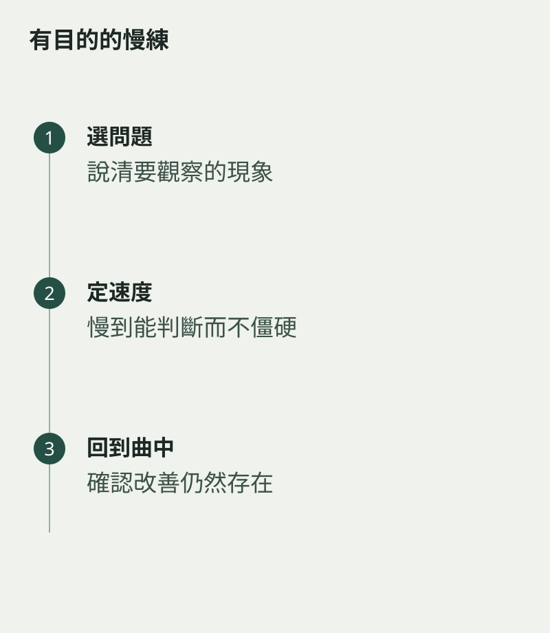

老師說慢練，回家便把整首曲放慢一半，卻不知道要注意哪裏。慢練的價值，是讓原本來不及察覺的動作和聲音變得清楚。每一遍最好有一個任務，否則只是把同樣問題慢慢重複。
先選一個小段，說出你想檢查的事情：手指是否同時落下、短音是否準時，還是換氣後的第一音是否穩定。不同問題，需要不同速度與分段方式。
慢到能作出判斷
速度不必越慢越好。慢到動作完全變形，或一口氣無法合理完成樂句，也可能失去原來關係。找一個能聽、能看、能保持自然動作的速度，較適合當前任務。
做完一遍便停下說結果，不急着再來。若你無法說出剛才哪裏較好、哪裏仍不穩，便先縮短段落，讓觀察更集中。

把改善帶回原來速度
在慢速做得清楚後，小幅增加速度，檢查同一項標準是否仍在。若一加快便消失，退回合適位置，別把速度上升本身當成成功。
然後接回前後句，確認慢練得到的動作能在音樂裏使用。慢練像把一張照片放大：看清細節之後，仍要回到整幅景象，不能永遠停在放大的畫面。你知道自己在聽甚麼，速度才真正慢得有意思。